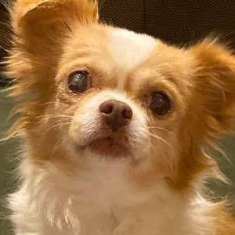
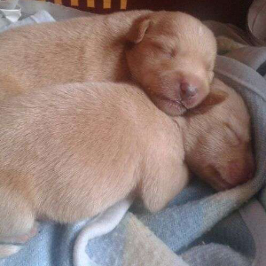
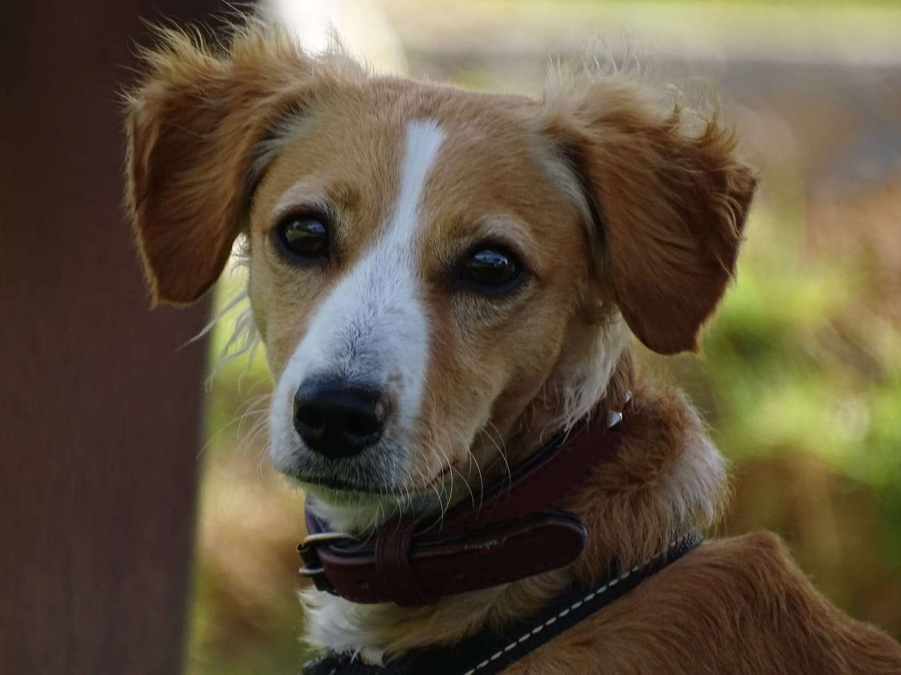
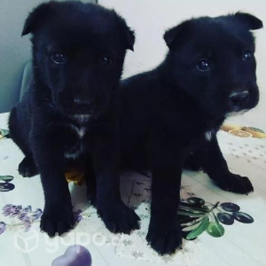
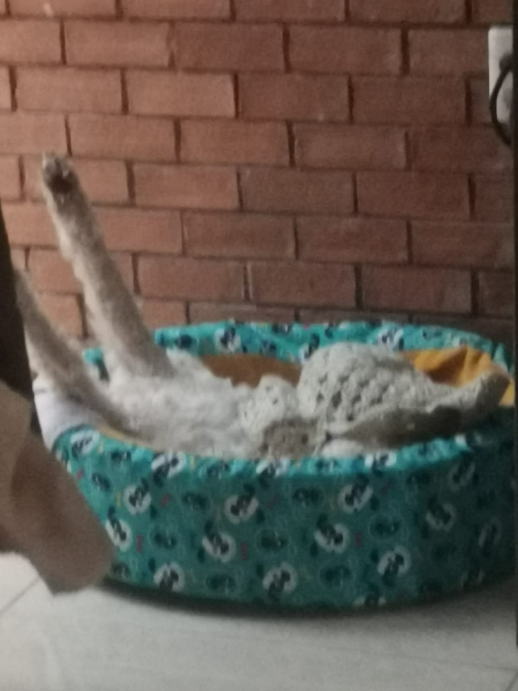
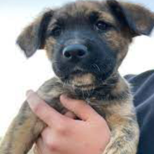
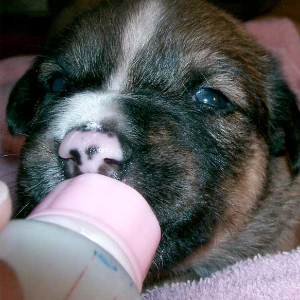
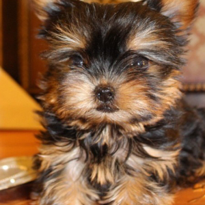

Edad : 4 meses Color : Café con Negro Enfermedades : Ningúna Vacunación : No Descripción:
Rocky es un perro cariñoso y juguetón de 2 años de edad. Es un mestizo con una hermosa combinación de colores en su pelaje. Le encanta correr y jugar al aire libre

Daisy
Edad: 1 año
Raza: Mestizo
Tamaño: Pequeño
Género: Hembra
Luna es una perrita dulce y amorosa de 1 año de edad. Tiene un pelaje suave y brillante que le encanta que le acaricien. Es muy sociable y le encanta estar rodeada de gente.

Coco y Xixi
Edad: 5 meses
Raza: Mestizos
Tamaño: Mediano
Género: Machos
Descripción:
Coco y Xixi son dos hermanos inseparables de 9 meses de edad que buscan un hogar amoroso juntos. Ambos tienen pelaje negro.

Yiro
Edad: 1 año
Raza: Mestizo
Tamaño: Pequeño
Género: Macho
Descripción:
Yiro es un cachorro adorable de 8 meses de edad. Tiene un pelaje suave y esponjoso que lo hace irresistible. Es muy juguetón y lleno de energía, siempre listo para correr y explorar.

Lupin y Houston
Edad: 7 meses
Raza: Mestizos
Tamaño: Pequeño
Género: Hembra y Macho
Descripción:
Lupin y Houston son una pareja de hermanos inseparables de 11 meses de edad que están buscando un hogar amoroso juntos.

Toxic
Edad: 6 meses
Raza: Mestizo
Tamaño: Mediano
Género: Macho
Descripción:
Toxic es un cachorro simpático de 6 meses de edad. Tiene una personalidad juguetona y traviesa que ilumina cualquier habitación. Le encanta jugar con juguetes de peluche y correr por el patio.

Cholo
Edad: 1 año
Raza: Mestizo
Tamaño: Grande
Género: Macho
Descripción:
Cholo es un perro encantador de 1 año y medio de edad en busca de un hogar amoroso. Tiene un pelaje dorado y una mirada tierna que cautiva a todos.

Osito
Edad: 4 meses
Raza: Mestizo
Tamaño: Mediano
Género: Macho
Descripción:
Osito es un perro mestizo de 3 años en busca de un hogar activo. Tiene un pelaje blanco y negro y unos ojos muy expresivos.

Brandom
Edad: 6 meses
Raza: Mestizo
Tamaño: Pequeño
Género: Macho
Descripción:
Brandom es un cachorro adorable de 8 meses de edad. Tiene un pelaje suave y esponjoso que lo hace irresistible. Es muy juguetón y lleno de energía